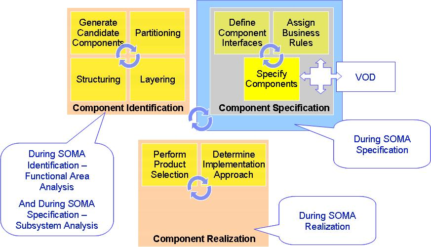

SOMA employs traditional component modeling principles but adds more rigor to the functional architecture by aligning
with the business. Component modeling technique has three steps. The first step in component modeling technique is
Component Identification, where candidate components are identified based on principles of partitioning, layering, and
structuring. In SOMA, Component Identification is performed in two places: First, Component Identification is performed
in Functional Area Analysis where subsystems are identified that are mapped to the functional areas, which is a
business concept or construct. Then Component Identification is again performed in Subsystem Analysis where the
composition of the subsystem and the detailed structure of the subsystems are defined in terms of service component,
functional component, and technical components. Hence, in Subystem Analysis, another set of components are identified,
namely, Service Component, Functional Component, and Technical Components.
The second step in component modeling technique is Component Specification, where component interfaces are defined,
business rules are assigned, and components are specified and further elaborated. SOMA has also added a step in
Component Specification to conduct Variation Oriented Design, or VOD, to specify the commonalities and to externalize
the variations.
The third step in Component Modeling technique is Component Realization, where product selection is performed and
implementation approach is determined.

|